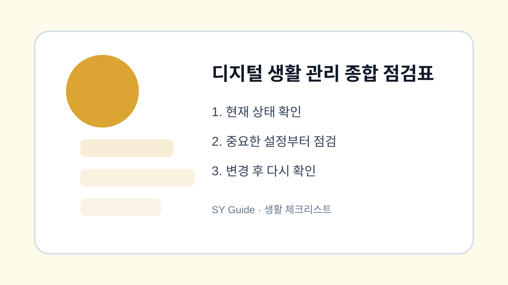

디지털 생활 관리 종합 점검표
스마트폰, 앱, 계정 보안, 백업, 구독 관리까지 한 번에 확인하는 종합 체크리스트입니다.

디지털 생활은 스마트폰 하나로 끝나지 않습니다. 앱 알림, 계정 보안, 사진 백업, 구독 결제, 가족 기기 설정이 서로 연결됩니다. 한 번에 모두 완벽하게 하려 하기보다 정기 점검표를 만들어두면 관리가 쉬워집니다.
월간 점검 기준
한 달에 한 번은 저장공간과 백업 상태, 계정 로그인 기록, 앱 권한, 구독 결제 내역을 확인합니다. 문제가 생겼을 때만 확인하면 원인을 찾기 어렵지만, 정기적으로 보면 작은 변화도 빨리 알아차릴 수 있습니다.
가족과 함께 확인할 항목
부모님이나 자녀 스마트폰은 글씨 크기, 긴급 연락처, 위치 공유, 결제 알림처럼 생활과 직접 연결된 항목을 우선 봅니다. 설정을 바꿀 때는 이유를 설명하고, 나중에 다시 볼 수 있도록 메모를 남기는 것이 좋습니다.
| 영역 | 점검 항목 | 주기 |
|---|---|---|
| 스마트폰 | 배터리, 저장공간 | 월 1회 |
| 앱 | 알림, 권한 | 월 1회 |
| 계정 | 로그인 기록 | 월 1회 |
| 백업 | 사진, 연락처 | 월 1회 |
| 구독 | 결제 내역 | 월 1회 |
설정을 바꾸기 전 마지막 확인
- 저장공간과 백업 완료 상태 확인하기
- 주요 계정 로그인 기록 보기
- 앱 권한과 알림 정리하기
- 디지털 구독 결제 내역 확인하기
- 가족 기기의 긴급 연락처와 보안 설정 점검하기
디지털 관리는 거창한 일이 아니라 작은 확인을 반복하는 습관입니다. 한 달에 한 번 같은 순서로 점검하면 스마트폰과 계정을 더 편하고 안전하게 사용할 수 있습니다.
디지털 생활 관리 종합 점검표 실제 상황 예시
디지털 생활 관리 종합 점검표 관련 문제는 대부분 한 가지 메뉴만으로 해결되지 않습니다. 알림, 권한, 저장공간, 계정 상태처럼 여러 설정이 연결되어 있기 때문에 현재 상태를 먼저 확인하고 하나씩 바꾸는 방식이 안전합니다. 이렇게 하면 어떤 변경이 실제로 효과가 있었는지도 파악하기 쉽습니다.
디지털 생활 관리 종합 점검표에서 피해야 할 실수
실수는 대개 급하게 처리할 때 생깁니다. 저장공간이 부족하다고 바로 삭제하거나, 보안이 걱정된다고 모든 권한을 꺼버리면 필요한 기능까지 멈출 수 있습니다. 변경 전후를 비교하고, 중요한 자료나 계정은 공식 도움말을 확인한 뒤 진행하는 것이 좋습니다.
디지털 생활 관리 종합 점검표 관련 설정을 먼저 확인해야 하는 이유
디지털 생활 관리 종합 점검표 관련 설정은 단순히 메뉴 하나를 켜고 끄는 문제가 아니라, 실제 사용 흐름에서 어떤 불편을 줄이려는지 먼저 정해야 합니다. 같은 메뉴라도 기기 제조사, 운영체제 버전, 앱 업데이트 상태에 따라 이름이 달라질 수 있으므로 현재 화면을 기준으로 차근차근 확인하는 것이 좋습니다.
디지털 생활 관리 종합 점검표에서 자주 생기는 실수
많은 사용자가 바로 삭제하거나 초기화하는 방식으로 문제를 해결하려 하지만, 그 전에 현재 상태를 기록해 두면 되돌리기가 쉽습니다. 알림, 권한, 저장공간, 로그인 상태처럼 서로 연결된 항목은 하나씩 바꾼 뒤 실제로 원하는 결과가 나오는지 확인해야 합니다.
디지털 생활 관리 종합 점검표 점검 후 다시 볼 부분
가족 기기나 업무용 계정에서는 본인에게는 사소한 변경도 다른 사람에게 큰 불편이 될 수 있습니다. 변경 전 백업 여부를 확인하고, 중요한 계정이나 자료가 관련되어 있다면 공식 도움말을 함께 보면서 진행하는 편이 안전합니다.